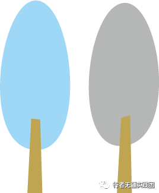
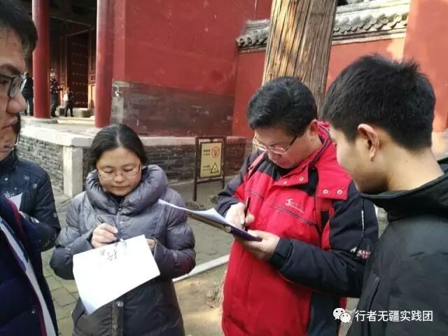

相识在齐鲁
文：张增其
面对，是战胜恐惧最好的办法。
当火车从黄河上驶过，我们即将到达我们的第一个目的地——济南。也终于到了团队最关键的实践一环，无论前期多么充分的准备问卷、调研方案，真正到了实施的前，内心还是有些恐惧，一种面对陌生城市的恐惧，一种与他人沟通的恐惧，一种相识陌生人的恐惧，一种做一名合格调研专员的恐惧。
相识在济南
相识趵突泉，“小院闲窗春已深，重帘未卷影沉沉。倚楼无语理瑶琴……”以为穿着紫红色衣服的老爷爷哼唱着李清照的《浣溪沙》，看外表是为学识渊博的老人，我们几个人犹犹豫豫，不知如何迈出这第一步，想着是不是要前去向老人请教，终于打响了调研的第一炮，和老人家交流了很多，了解了趵突泉半个世纪来的变化，收获颇丰。在泉水旁边，队长为了锻炼我们，再次鼓励我们上前，我鼓起勇气主动和自己两个年纪相仿的女生进行了调研，并填写了问卷。
相识黑虎泉，看到了正在取泉水的老大爷，我们走向前去帮他取泉水，并且品尝了泉水，和老大爷交流了千百年来这座泉城的人们饮用泉水的历史。
相识在泰安
相识岱庙，听着整齐的声音，却看不到有人，使我们几个目瞪口呆，等了下一看，原来是一群小学生登上城墙，我对们他们的老师进行了采访，但出于他们的责任意识，只和我们简单交流了几句，却让我看到了当地学校对学生传统文化教育的重视，这是现今国内众多学校缺失的。在岱庙旁的公园，我们遇到了曾修缮过泰山建筑的一位老工匠，我们主动和他交流，老人家也很愿意和我们说，他用顺口溜向我们展示了泰安当地的特点。
相识在曲阜
相识在“三孔”，首先我们相识了一对母子，我们帮他们拍照，他们也很配和我们的调研，并填写了问卷。在孔庙，我们的问卷填写屡次受挫，遭到了多位游客的拒绝和不屑，不过我们并没有放弃。我们还相识了一位热爱中国传统文化的德国友人，英语水平的不足使我们当时顿时觉得外语学习的重要，在翻译的帮助下我们进行了愉快的交谈……

相识在齐鲁，短短五天的实践中，我们的相识却不仅仅如此，我们的调研亦取得了不错的结果。
作为一名调研人员，我们便要敢于面对，敢于和陌生人交流，敢于相识，善于发现，成果不会无缘无故出现。真正调研一个文化，就要从处于这个文化中的人就行沟通了解，而不仅仅存在于它所留下的那些物质。